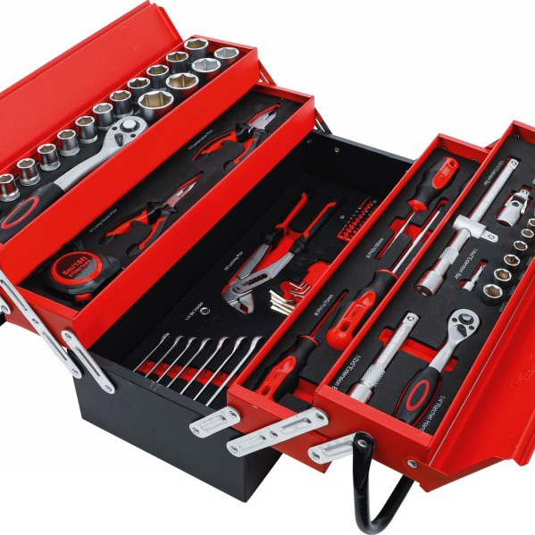
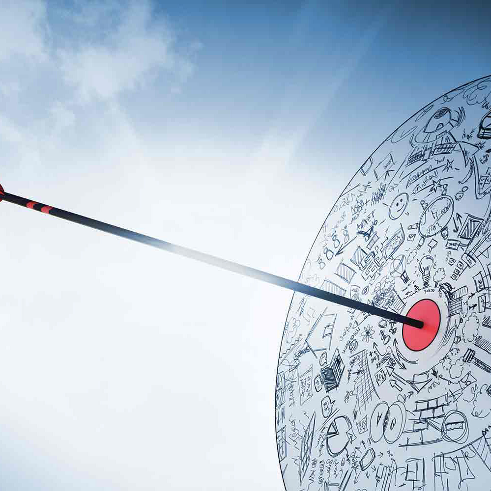
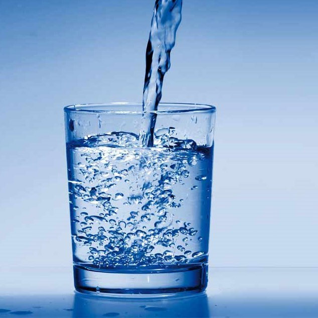
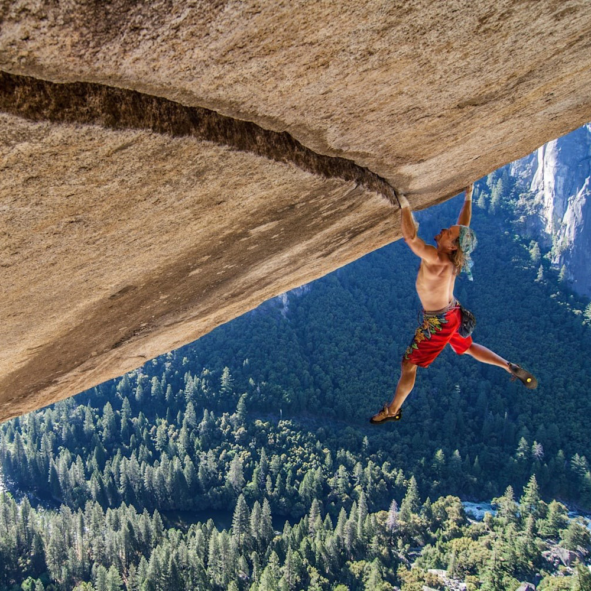

Quand et comment se former
Quelques notions de bases
En savoir plus
Connaître son moment productif
En savoir plus
Avoir les bons outils

En savoir plus
Apprendre à se fixer les bonnes objectifs
Connaître ses points forts

En savoir plus
Améliorer ses faiblesses
En savoir plus
Tester ses limites
En savoir plus
Surmonter les obstacles
Travailler sa confiance en sois
En savoir plus
Apprendre à s'adapter

En savoir plus
Premier pas pour atteindre "The Montagne"

En savoir plus
Bonus
En savoir plus